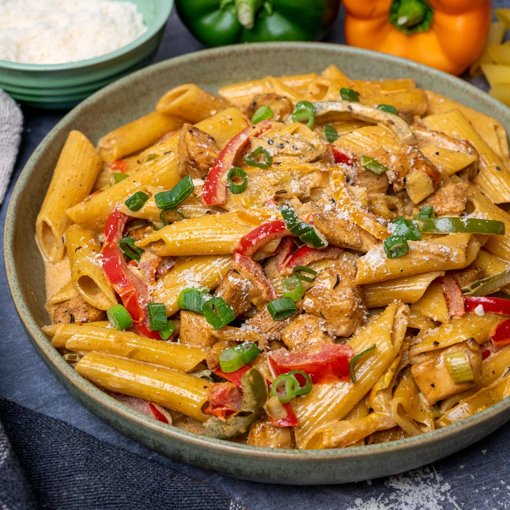

Rasta Pasta

DESCRIPTION
Rasta pasta is creamy pasta tossed with Caribbean style jerk chicken and sauteed bell peppers. This dish is so full of flavor, and makes a great weeknight dinner that can be made in just half an hour! It's creamy, rich, spicy, and cheesy.
INGREDIENTS
- 16 ounces (450 g) dried pasta
- 2 large chicken breasts
- 2 tablespoons vegetable oil (1 tbsp for frying chicken and 1 tbsp for sauteeing bell peppers)
- 3 tablespoons jerk seasoning (1.5 tbsp with the chicken, and 1.5 tbsp goes in the sauce)
- 3 sliced bell peppers in different colors
- 1 half cup sliced green onions
- ¼ cup (60 ml) vegetable stock or chicken stock
- ½ cup (120 ml) heavy cream or half and half
- ½ cup (80 g) grated parmesan cheese
STEPS
- Cook pasta according to the package instructions, take it out at “al dente” as you will cook it more in the next steps.
- I'm using rotisserie chicken in this recipe, but if you are using raw chicken breast then cube it, toss in jerk seasoning and cook until it's golden and cooked through. Then remove from the pot, and set aside to add later.
- Add vegetable oil to a heavy bottomed pot, and saute bell peppers with green onions. Add the minced garlic and cook until it’s fragrant.
- Add jerk seasoning to the pot.
- Add heavy cream, cooked chicken and vegetable stock to the pot. Simmer for a few minutes or until the sauce thickens, mix in the parmesan in the sauce and then mix in the pasta.
- Garnish with chopped chives, green onions or parsley and serve.
HOME